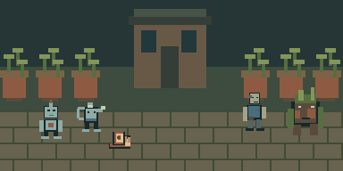

MACETAS AL ATAQUE · ESTUDIO LOCAL · NO PUBLICADO
Un jardín arcade en 2D
Arte original de muestra: siluetas de baja resolución, paleta corta y proporciones menos de caricatura. Sin personajes de otras obras. No es 3D.

Rita
Regadera de metal, asa lateral y pico inclinado.
Tito
Caracol bajo, concha espiral y antenas discretas.
Pepa
Robot de jardín con piezas de metal y panel cobrizo.
Zombi de utilería
Ropa gastada, silueta humana y ojos mínimos.
Guardián de raíces
Masa de tierra y ramas, sin una cara de caricatura.
Volver al prototipo de entrada y mando